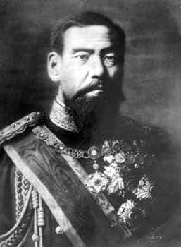
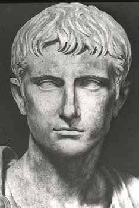

Jared is a middle-aged guy full of old-man wisdom. He's best described as a gentlemen scholar and a man among men. You can read his writing at his site: Legends of Men


At one point while serving in the military I was pursuing a master’s degree in international relations. The first course I took for that was about the history of international relations. In that course, we learned a great deal about the formation and subsequent prominence of the nation-state and the evolution from feudalism to democracy. The professor asked us, “Is democracy the end of that evolution? Should it be? Is that what is best for the citizens of the nation-state?”
It was a rhetorical question. We discussed it, and a surprising amount of people did not think democracy was so great. But if not democracy, then what? The answer is a democratic monarchy. Here’s why…
I’ll never claim to be in the top tier of intelligent people, but I am smart enough to know when smart people say dumb things. Libertarians take the cake for smart people who say dumb things. For them, the government is the root cause of everything wrong with society. If only the government were abolished and got out of the way people could solve all of their problems. But first libertarians need everyone to adhere to the non-aggression principle because they’re such proud nerds that they can’t admit they need the government to protect them from stronger men.
Yet the libertarians from their high horses have never been able to address why we have governments at all. People chose governments. We saw a benefit to having a government and stuck with it. Man in his primitive state did not form governing bodies until it was pertinent to do so, probably because of population growth and resource limitations. Government organizations could have been abolished in those early stages as counter-productive, but they weren’t. As populations continue to grow and resources become depleted in greater amounts, government organizations become more valuable, not less.
Once you accept that a governing body is necessary you can begin to address the problem of fixing our current corrupt and inefficient system.
Democratic republics have never been and never will be simple. They weren’t simple in 1776 when universal surveillance, internet censorship, and ocean pollution were non-existent and it has only gotten more and more complex since then.
One of the principles of logistics is simplicity. In order to accomplish any task, added complexity allows for more points of failure. In government, added complexity allows more opportunities for corruption. Forget the philosophical questions behind internet censorship for a moment (though they are relevant) and just ask, has YouTube broken any laws by removing the Infowars channel? At this point, it doesn’t look like they did, but it would take a team of experienced lawyers and judges to answer that conclusively.
With a monarchy, the state moves back to simplicity. The monarch declares whether or not YouTube was justified. If the monarch finds corruption in the FBI, he has the guilty parties imprisoned or beheaded, or (if he wants to go more medieval) quartered. Is there any doubt, given all of the baseless investigations about Russia collusions that leaders in the FBI are corrupt or at the very least incompetent? If the monarch says off with their heads and decrees that the FBI accomplish its jobs, the jobs will finally get done correctly.
The best part of a monarchy would be the decrees. If the monarch decrees taxes be cut, they get cut. If he decrees they be raised, they get raised. No need for months of back and forth on the Senate floor. No more filibusters. No more do-nothing politicians spouting empty words. The monarchs words are law. His will be done. If it works, great. If not, there’s nothing to blame except the decree.
The worst part of our current government is how much we pay for it to do surprisingly little for us. That’s because it’s too complex. There are too many points for failure. When the monarch decrees something you will feel its effects.
What’s to keep the monarch from corruption? That’s easy—we’ll elect him, every three years. If he’s incompetent or evil or whatever, we’ll elect the next guy. What allowed monarchs in the past tyrannical control was their ability to use the military to suppress their own people. The American military would never obey an order to harm its own people. The monarch would be entirely at the whim of the citizens (no illegals would be allowed to vote).
Everyone remembers monarchs as tyrannical. That’s just because they’re interesting. Here are some incredible monarchs:

Emperor Meiji (a posthumous name) took Japan from the middle ages into the modern world. When he took power Japan was feudal, not so different than European middle ages. The emperor saw the writing on the wall. He made the hard call to reform Japan to industrialize. As a result, Japan had an industrial revolution and became one of the most powerful nations in the world.

Most people think of monarchs as power-hungry warlords but Augustus of Rome initiated the Pax Romana, a period of two centuries of peace. He also had roads, police forces, fire-fighting forces, and a courier system developed. One man with the authority to do great things can do many.
Commonly referred to as the Sun King, Louis XIV made France the most powerful nation-state in Europe. He ended feudalism in France and consolidated power for the monarch. As a result, he was able to make France stronger both militarily and commercially.
The fundamental problem with our current government is bureaucracy. Nothing gets done because of it. It’s so complex that we can’t hold anyone or any system accountable when things don’t get done. We just keep pouring our tax dollars into that system. But the answer isn’t to get rid of government altogether, it’s to choose a government that eliminates the bureaucracy and complexity. An elected monarchy accomplishes that. Therefore, I reluctantly nominate myself for the role of monarch.
For more from Jared Trueheart on the roles of men and women in literature and film check out his writing at Legends of Men.
Read More: The French Have Elected Globocuck Emmanuel Macron And His Pro-Islamic Platform